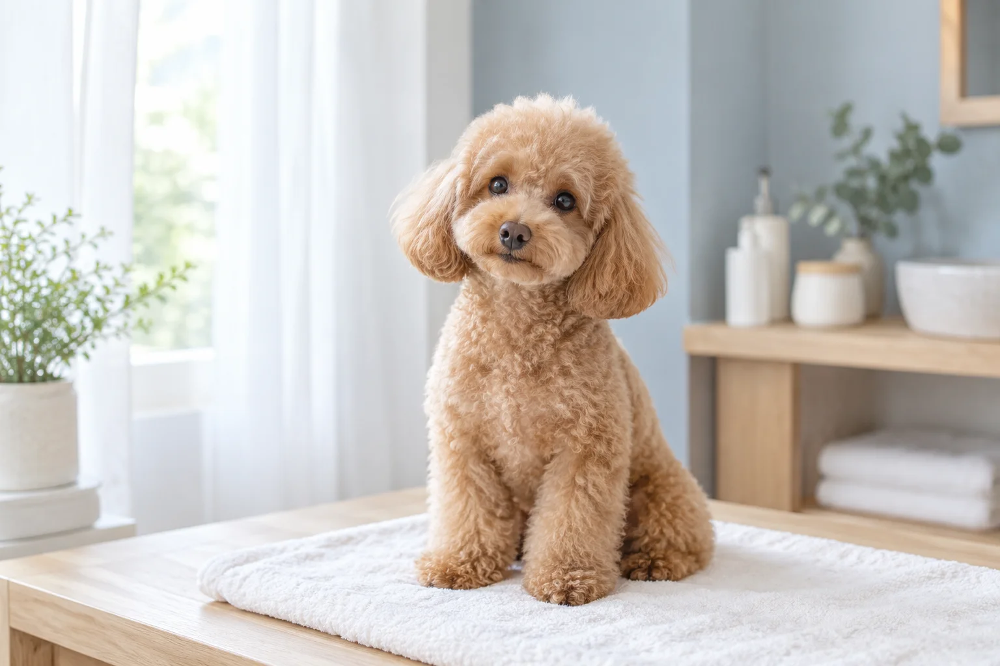
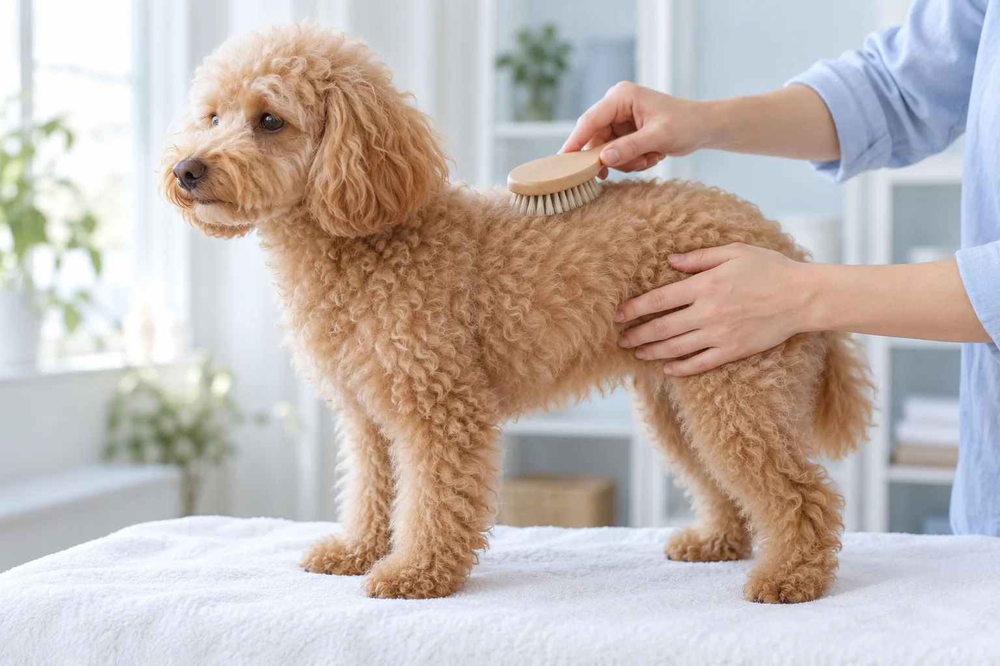

基礎洗澡
NT$800 起洗澡、吹乾、剪指甲、清耳、擠肛門腺、修腳底毛。
1.5 小時小步寵物美容 / A LITTLE CARE
每個時段只接一隻，洗好後直接接回，不關籠。
看美容服務
預約制，一次一隻。
預約時說明怕生、怕吹風或身體狀況，方便安排時間。
照護概念 / AI 原創視覺
照護服務 / CARE MENU
點選服務，查看內容、價格與時間。
洗澡、吹乾、剪指甲、清耳、擠肛門腺、修腳底毛。
1.5 小時服務與價格為範本內容。
基礎洗澡全部內容，加上全身造型修剪。可以帶參考照片來討論。
2.5 小時服務與價格為範本內容。
針對 10 歲以上或有慢性病的孩子，全程放慢、隨時中斷休息。
2 小時服務與價格為範本內容。

照護節奏 / OUR PACE
怕生、怕吹風或需要休息，預約時先說明。
怕生、怕吹風，或有需要特別注意的狀況，先整理成清楚的照護資訊。
依當下狀態調整節奏，需要時停下來休息，不急著趕完每一步。
確認整理內容與接回時間，讓飼主看懂這次照護做了什麼。
要，我們不接現場。每個時段只服務一隻，所以請至少提前兩三天用 LINE 跟我們約。
帶疫苗紀錄就好。如果孩子有在吃藥或有皮膚狀況，先跟我們說一聲。
可以，但多數孩子在主人不在時反而比較放鬆，我們會全程拍照傳給你。
不會。洗完吹乾就結束，請準時來接，不會有等待時間。
接，但請先跟我們說明狀況，我們會安排比較長的時段，必要時分兩次完成。